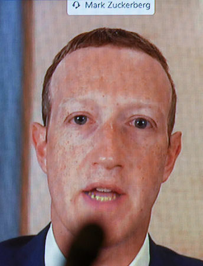

Mark Elliot Zuckerberg (born May 14, 1984) is an American business magnate, internet entrepreneur, and philanthropist. He is known for co-founding the social media website Facebook and its parent company Meta Platforms (formerly Facebook, Inc.), of which he is the chairman, chief executive officer, and controlling shareholder.
Zuckerberg attended Harvard University, where he launched Facebook in February 2004 with his roommates Eduardo Saverin, Andrew McCollum, Dustin Moskovitz, and Chris Hughes. Originally launched to select college campuses, the site expanded rapidly and eventually beyond colleges, reaching one billion users by 2012. Zuckerberg took the company public in May 2012 with majority shares. In 2007, at age 23, he became the world's youngest self-made billionaire. As of September 2022, Zuckerberg's net worth was $49.4 billion according to the Forbes' Real Time Billionaires making him the 23rd richest person in the world.
